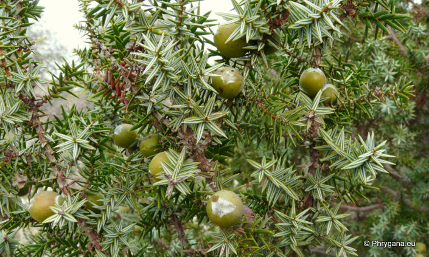
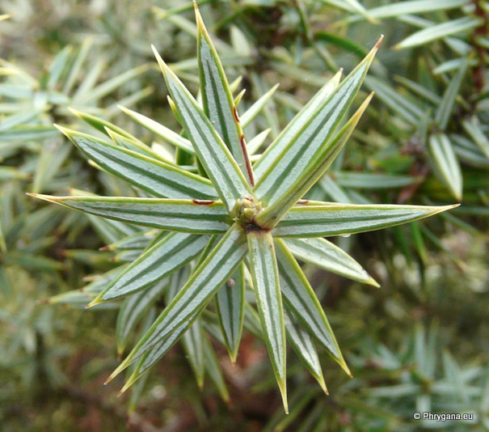
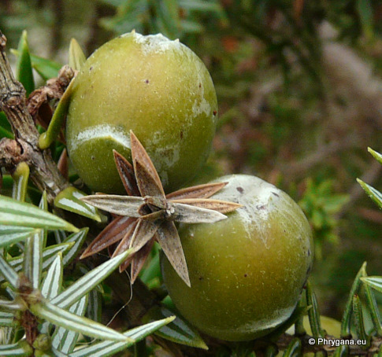
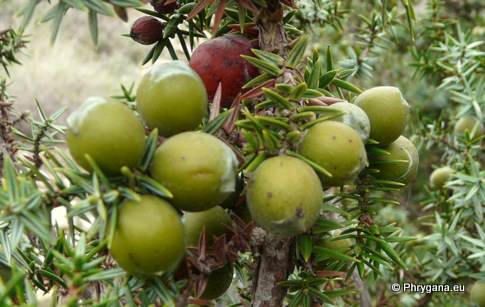
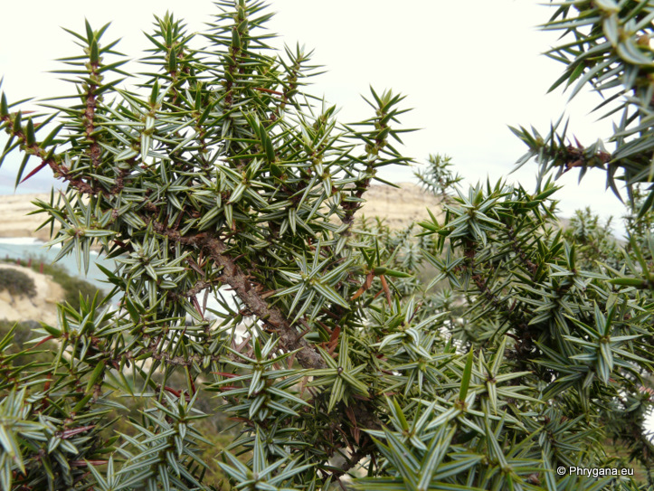
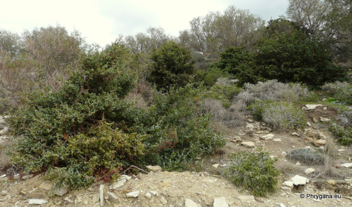
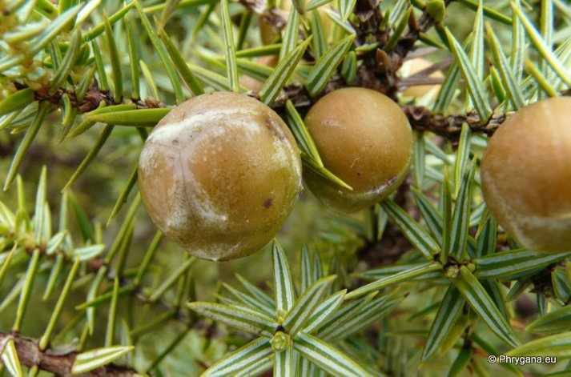
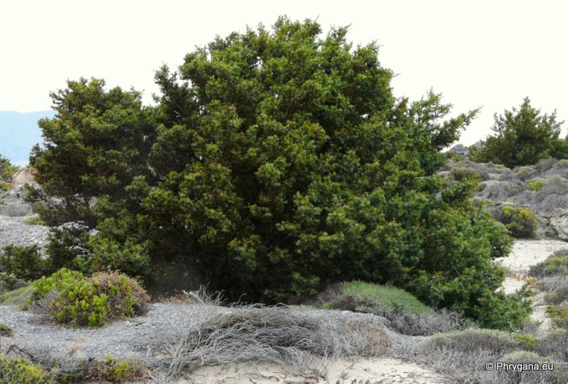

| PHRYGANA | Fauna | Flora | Galles | liste des espèces |
contact -
info - commentaires phrygana1 (at) gmail.com |
| Particularités crétoises | nouveautés | Mines | ressources naturelles |
| Juniperus oxycedrus L. subsp. macrocarpa (SM.) BALL |
| 216 | Flora | CUPRESSACEAE | Juniperus |
 Juniperus oxycedrus subsp. macrocarpa Kalamaki 20 décembre 2010 |
| Prickly Juniper -- le Genévrier cade -- Ginepro ossicedro -- Enebro de la Miera | |
| Arbre à port étalé, assez trapu, souvent prostré | |
| Feuilles: aiguilles atténuées, pointues, longues de 15 à 22 mm, larges jusqu'à 2.5 mm, en verticilles de 3; deux bandes étroites blanches sur la face supérieure; couleur vert grisâtre | |
| Ecorce brun gris à brun rougeâtre | |
| Fleurs: jaune pâle, les fleurs mâles en petites grappes, les fleurs femelles solitaires à l'aisselle des feuilles; sépales linéaires-lancéolés | |
| Fruit: cône (8 - 15 mm), sessile, rond, bleu verdâtre devenant brun rougeâtre à maturité | |
| Hauteur: 1 - 5 (-12) m | Type biologique: nanophanérophyte sempervirent |
| Floraison: février mars avril | |
| Altitudes: 0 - 300 m | |
| Statut en Crète: indigène -- native | |
| Biotopes en Crète: terrains sableux côtiers, forêts de conifères (Gavdos) | |
| Distribution: région Méditerranéenne | |
| Note: plante héliophile, xérophile | |
|
 Juniperus oxycedrus subsp. macrocarpa Matala 20 décembre 2010 |
|

 Juniperus oxycedrus subsp. macrocarpa Kalamaki 20 décembre 2010 |
|
 Juniperus oxycedrus subsp. macrocarpa Matala 20 décembre 2010 |
|
 Juniperus oxycedrus subsp. macrocarpa Kalamaki 20 décembre 2010 |
|
 Juniperus oxycedrus subsp. macrocarpa Elafonisi 12 mai 2012 |
|
 Juniperus oxycedrus subsp. macrocarpa Elafonisi 12 mai 2012 |
| 07 février 2013 |
| © paul fontaine -- © Phrygana.eu 2007 -- 2013 |